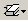

Schematic and Dataflow Toolbar Tab
Button |
Name |
Shortcuts |
Description |
|---|---|---|---|
|
Trace Input Net to Event |
Menu: |
Move the next event cursor to the next input event driving the selected output. |
|
Trace Set |
Menu: |
Jump to the source of the selected input event. |
|
Trace Reset |
Menu: |
Return the next event cursor to the selected output. |
|
Trace Net to Driver of X |
Menu: |
Step back to the last driver of an unknown value. |
|
Expand Net to all Drivers |
None |
Display driver(s) of the selected signal, net, or register. |
|
Expand Net to all Drivers and Readers |
None |
Display driver(s) and reader(s) of the selected signal, net, or register. |
|
Expand Net to all Readers |
None |
Display reader(s) of the selected signal, net, or register. |
 |
Remove All Highlights |
Menu: or
|
Clear the highlighting identifying the path you have traversed through the design. Click and hold the button to open a drop down menu with the following options:
|
Delete Content |
Menu: or
|
Delete the selected signal. Click and hold the button to open a drop down menu with the following options:
|
|
Regenerate |
Menu: or
|
Redraws the current schematic view to better take advantage of the available space. For example, after adding or removing elements. |
|
Enable 1-Click Mode |
Enables single-click sprout expansion. Default is double-click to sprout. |
||
|
Show Wave |
Menu: |
Display the embedded wave viewer pane. |